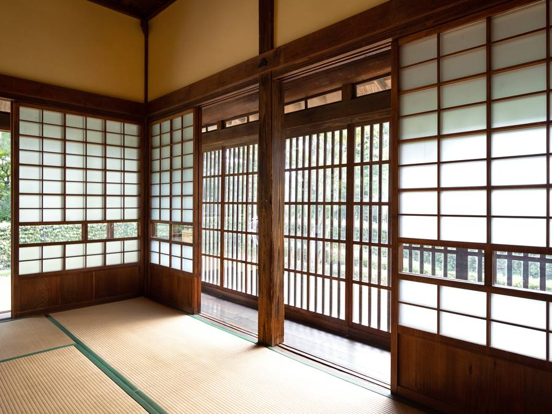
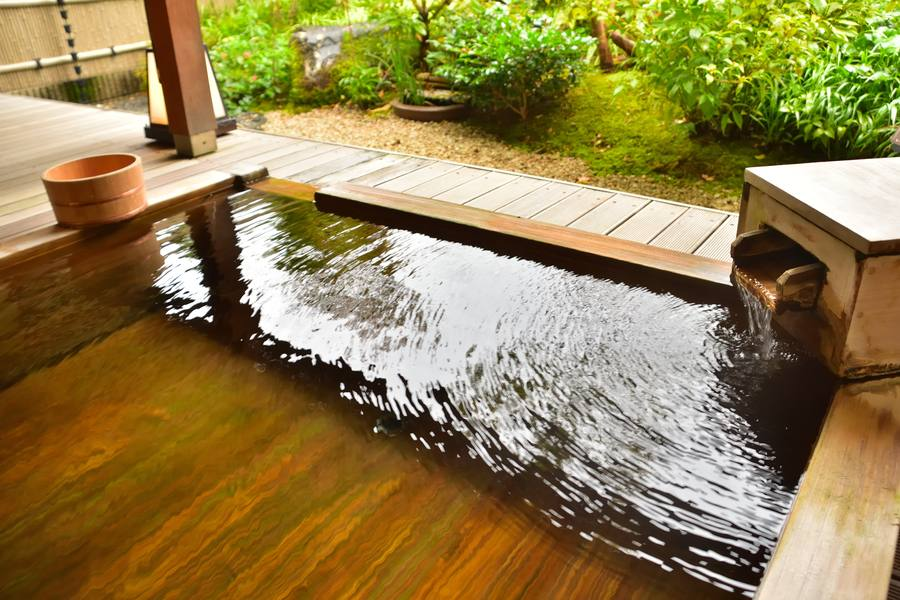
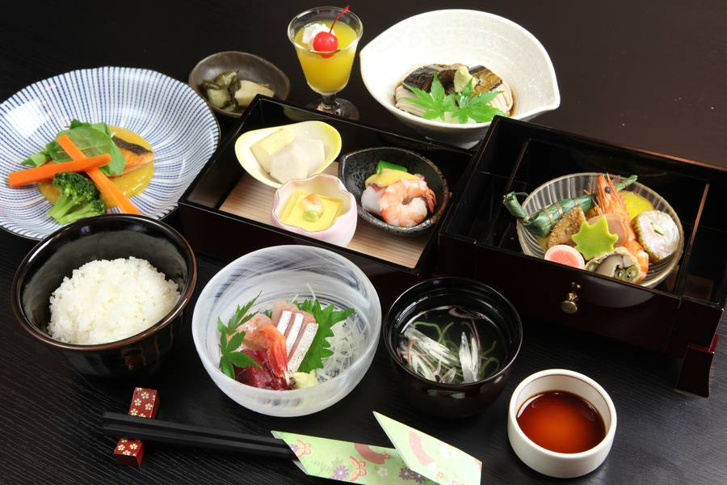
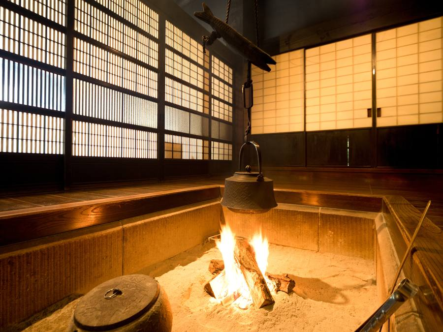
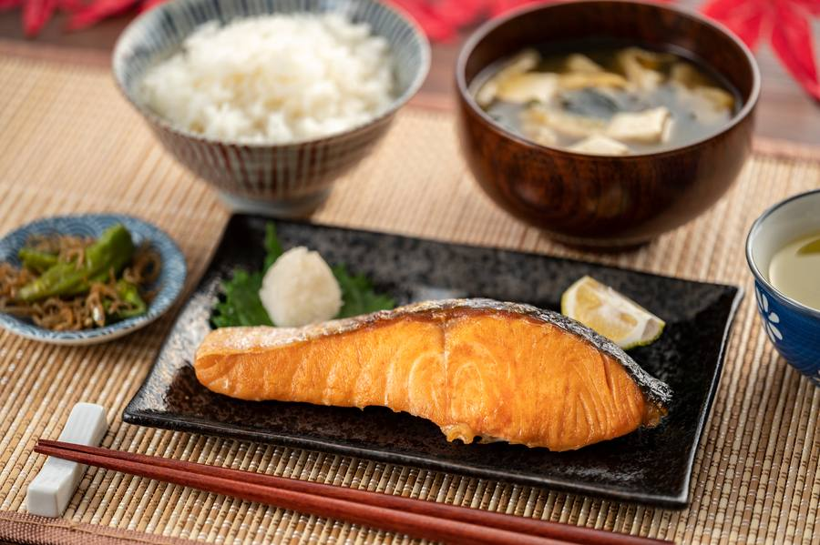

15:00
着いたら、鍵を受け取って終わりです
フロントも、
チェックインの列もありません。
門の脇の郵便受けに鍵が入っています。
案内が要るときだけ、
お電話ください。

15:00
フロントも、
チェックインの列もありません。
門の脇の郵便受けに鍵が入っています。
案内が要るときだけ、
お電話ください。

17:00
檜の風呂は、
着いてから発つまでずっとお二人のものです。
何時に入っても、
あとがつかえていません。

19:00
地元の料理人が
棟のダイニングまで運びます。
配膳が済んだら引き上げますので、
食べ終わるまで誰も入ってきません。

21:00
囲炉裏に炭を熾しておきます。
話していても、
黙っていても、
この部屋にいるのはお二人だけです。

翌9:00
朝食は前の晩に冷蔵庫へ入れておきます。
温めるだけです。
9時でも11時でも構いません。
歩いて行ける店はありません。
コンビニまで車で15分。
観光の案内も置いていません。
何もしないための宿として作りました。
本と、
湯と、火があります。
それで足りる方に
来ていただきたい宿です。
「一棟貸し」と書いてある宿でも、
同じ敷地に別の棟があることがあります。
ここには、
ありません。
※ 図は敷地の説明用です。
実際の制作では航空写真か実測図に差し替えます。
78,000円 / 1泊2名(税込)
土曜・連休の前日は92,000円。
12月31日〜1月2日は120,000円です。
山の中にあります。
着けるかどうかがいちばん心配なところなので、
先に全部書いておきます。
※ サンプルサイトのため、
ボタンは動作しません。
実際の制作ではGoogleマップにつなぎます。
本当に、他のお客さんはいませんか
いません。
1日1組だけです。
敷地に入るのはお二人と、
夕食をお運びする者だけです。
何もない場所と書いてありますが、
退屈しませんか
何もしないための宿です。
歩いて行ける店はありません。
本と、
風呂と、火があります。
それで足りる方に来ていただきたい宿です。
到着が遅くなりそうです
何時でも構いません。
鍵は門の脇の郵便受けにあります。
夕食の時間だけ、
前日までにお知らせください。
子ども連れでも泊まれますか
泊まれます。
ただし囲炉裏に火を入れますので、
小さいお子さんは目を離さないでください。
キャンセルはいつまでできますか
7日前まで無料です。
6日前から前日までは50%、
当日は100%いただきます。